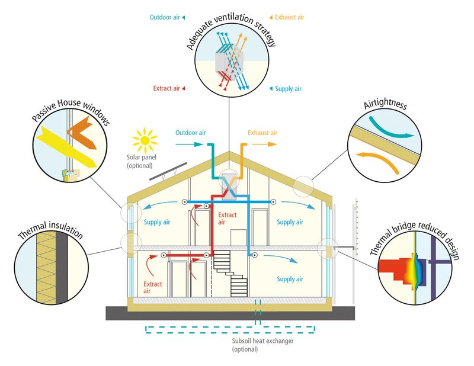

O tom, co je to pasivní dům a co všechno to obnáší, jsem se dozvěděl poprvé na brněnském stavebním veletrhu několik let zpátky. Zúčastnil jsem se přednášky, kterou pořádalo Centrum pasivního domu. Líbilo se mi, že je možné postavit dům tak, že spotřebovává minimum energie na vytápění a zároveň poskytuje vysoký komfort.
Nechceme však stavět pasivní dům primárně jen proto, že je energeticky úsporný, ale taky proto, že všechny jeho vlastnosti nám vyhovují a koncept pasivního domu nám zkrátka dává smysl. Chceme mít dobře navržený dům a záleží nám na kvalitě bydlení. Líbí se nám velká francouzská okna, chceme mít neustále čerstvý vzduch, nechceme dýchat prach a škodliviny, nechceme mít v domě plísně kvůli vysoké vlhkosti, v létě se nechceme upéct a rádi šetříme přírodu. Líbí se nám i vlastnosti VPC zdiva, ze kterého se pasivní domy často staví. Vápenopískové cihly jsou pevné a odolné, výborně akumulují teplo, izolují zvuk, jsou nehořlavé, vyrábí se z přírodních materiálů a zdi mají malou tloušťku, takže místnosti mohou být větší.
Navrhnout pasivní dům není jednoduché. Vyžaduje to promyšlený architektonický návrh šitý na míru a detailní projekt. Je potřeba použít kvalitní materiály a důležitá je i precizní řemeslná práce. V dnešní době nemá smysl stavět jiný dům než nízkoenergetický nebo pasivní a pokud v rámci programu Nová zelená úsporám můžeme získat dotaci až 450000 Kč, vyplatí se dům postavit v pasivním standardu. Náklady navíc už nejsou o tolik větší, než u nízkoenergetického domu. Mnoho lidí má nutkání řešit návratnost investice pasivních domů oproti běžným domům. To však pro nás není tak zásadní. Mnohem důležitější je kvalita a komfort bydlení. Je to podobné, jako když bych srovnával Škodu Fabia a Škodu Superb. Dražší auto si kupuji proto, že mi záleží na kvalitě vozu, jízdním komfortu, bezpečnosti a designu, nikoliv však kvůli nižší spotřebě paliva. Můžeme to brát i z pohledu investičního - pasivní dům bude mít vyšší tržní hodnotu, zvláště po roce 2020, kdy začne platit nová evropská směrnice o energetické náročnosti budov. Dá se předpokládat, že podmínky se budou dále zpřísňovat.
Zmíněná směrnice se týká snížení potřeb energie budov v zemích EU o 20% do roku 2020 oproti roku 1990. To však neznamená, že po roce 2020 se budou muset stavět výhradně jen pasivní domy, jak si mnoho lidí myslí. Budova s téměř nulovou spotřebou energie dosahuje měrné spotřeby tepla na vytápění od 40 do 80 kWh na m2 v závislosti na geometrii stavby, což zhruba odpovídá nízkoenergetickým domům.
Nízkoenergetický dům je definován tak, že potřeba tepla na vytápění je maximálně 50 kWh na m2 obytné plochy stavby za rok. Pasivní dům má roční potřebu tepla na vytápění < 15 kWh/(m2a), celkovou potřebu primární energie spojenou s provozem budovy < 120 kWh/(m2a) a zaručuje neprůvzdušnost obálky budovy, která se ověřuje blower-door testem. Požadovaná intenzita výměny vzduchu při přetlaku/podtlaku 50 Pa za 1 hodinu je n50 < 0.6 h^-1. Energeticky pasivní dům se nevytápí pouze čerpadlem či kotlem, ale velký vliv mají i pasivní tepelné zisky - solární zisky (okna), vnitřní tepelné zisky (spotřebiče) i lidské teplo.

Zdroj: Passive House Institute
Charakteristiky pasivního domu:
- Tvar domu - kompaktní tvar, ideálně kvádr, delší stranou obrácený k jihu.
- Zóny - oddělení vytápěných a nevytápěných prostor.
- Orientace - obytné místnosti směrem k jihu, zázemí na severní straně domu.
- Okna - velké prosklené plochy na jižní straně domu pro zajištění optimálních solárních zisků, ideálně trojskla.
- Stínění - stínící prvky (např. přesah střechy, rolety, pergola) proti přehřívání interiéru v létě.
- Tepelná izolace - zateplení základů, stěn a střechy domu pro snížení tepelných ztrát domu a redukce tepelných mostů.
- Řízené větrání - automatizovaný systém větrání s rekuperací tepla, který zajistí neustálý přívod čerstvého vzduchu a odvod vlhkosti při dodržení tepelné pohody.
Pár lidí se mě ptalo, jestli budeme mít v domě klimatizaci. Klimatizace v pasivním domě dle mého názoru nemá co dělat. V českých klimatických podmínkách není potřeba, je-li dům správně navržen a okna jsou vhodně zastíněna. Studené proudění vzduchu je nepříjemné a může mít negativní vliv na zdraví člověka, a proto klimatizaci ani nechceme. Provoz a údržba taky něco stojí. Klimatizace v pasivním domě v podstatě poukazuje na to, že dům v letních měsících nefunguje správně. Existuje efektivnější způsob, jak zajistit v letních hicech příjemné klima - např. podlahové chlazení.
Komentáře (3)
Komentáře jsou uzavřené.